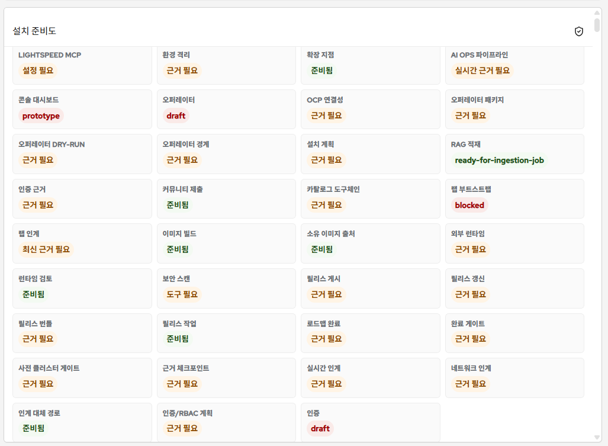

OCP 운영 콘솔 확장 가능성 검증과 Cywell OpsLens PoC
Cywell OpsLens는 OpenShift 기본 콘솔을 유지하면서, 공식 OperatorHub/OLM/ConsolePlugin 경로를 통해 OCP 콘솔 안에서 실행되는 KOMSCO 운영 지원 콘솔 확장 모드입니다.
발표 핵심 메시지
1. 공식 기능 범위 안에서 검증
OperatorHub/Software Catalog, OLM, ConsolePlugin, console proxy를 사용했습니다. iframe, DOM 주입, 콘솔 컨테이너 교체는 목표가 아닙니다.
2. 단순 외부 대시보드가 아님
OpenShift 콘솔에서 설치하고, 콘솔 좌측 메뉴에서 진입하며, 콘솔 인증/프록시 흐름을 통해 API를 호출하는 구조입니다.
3. 운영 판단 보조가 목적
기본 콘솔 기능은 유지하고, 근거 확인, 상태 요약, AI Assistant, read-only 분석 흐름을 추가하는 방향입니다.
공식 근거
이번 PoC는 OpenShift가 공식적으로 제공하는 Operator 설치, ConsolePlugin 확장, web console customization 범위 안에서 운영 콘솔 확장이 어디까지 가능한지 확인하기 위해 구성했습니다.
| 공식 근거 | 확인한 의미 | OpsLens 적용 방향 |
|---|---|---|
| Web Console | OpenShift 콘솔은 클러스터 관리, 운영, 문제 분석을 위한 공식 GUI입니다. | OpsLens는 외부 사이트가 아니라 콘솔 내부 운영 지원 화면으로 진입합니다. |
| Software Catalog / OperatorHub | Operator를 검색하고 설치하는 공식 설치 경로입니다. | Cywell OpsLens를 catalog에 등록하고 설치 가능한 Operator 형태로 제공합니다. |
| Operator Lifecycle Manager | Subscription, InstallPlan, CSV, CRD로 Operator 수명주기를 관리합니다. | 설치 후 `OpsLensInstallation` CR을 통해 제품 리소스를 적용합니다. |
| Dynamic ConsolePlugin | 콘솔 런타임에 custom page, navigation item, resource tab, action 등을 추가할 수 있습니다. | OpsLens 좌측 메뉴, full-page 화면, API proxy를 ConsolePlugin으로 제공합니다. |
| Console customization | 공식 설정 범위 안에서 로고, 제품명, 링크, 알림 등 콘솔 표면 일부를 조정할 수 있습니다. | KOMSCO Edition 브랜딩은 공식 customization과 plugin UI 범위 안에서 적용합니다. |
공식 기능범위 기준 최대 확장 가능성
공식 근거를 기준으로 볼 때, OCP 내부에서 우리 회사 프로그램이 활약할 수 있는 범위는 단순 화면 추가를 넘어 설치, 메뉴, 전용 화면, 리소스별 탭/액션, API proxy, 운영 Assistant까지 확장될 수 있습니다.
| 가능 범위 | 설명 | 이번 PoC 반영 수준 |
|---|---|---|
| Catalog 등록 및 설치 | Software Catalog / OperatorHub에 제품을 등록하고 OLM으로 설치할 수 있습니다. | 시연 가능 Catalog 카드와 상세 설치 화면 확인. |
| Operator 기반 제품 적용 | 설치 후 CRD/CR을 통해 API, dashboard, plugin 같은 제품 리소스를 관리할 수 있습니다. | 시연 가능 `OpsLensInstallation` 기반 적용 구조 확인. |
| 콘솔 좌측 메뉴 추가 | ConsolePlugin navigation extension으로 콘솔 메뉴에 제품 진입점을 추가할 수 있습니다. | 시연 가능 `Cywell OpsLens` entry 확인. |
| 전용 full-page 화면 | ConsolePlugin route/custom page로 제품 전용 화면을 콘솔 안에서 제공할 수 있습니다. | 시연 가능 OpsLens dashboard 화면 로드 확인. |
| Console proxy 기반 API 호출 | ConsolePlugin backend/proxy를 통해 콘솔 인증 흐름 안에서 backend API를 호출할 수 있습니다. | 시연 가능 `API 연결됨` 상태 확인. |
| OCP 리소스 read-only 조회 | 권한 범위 안에서 cluster resource, workload, pod, route, operator 상태를 조회할 수 있습니다. | 시연 가능 설치 상태와 OCP 리소스 상태 표시. |
| 리소스별 탭/액션 확장 | Dynamic plugin은 resource page tab/action 같은 세부 확장도 지원합니다. | 검토 대상 향후 OCP 메뉴별 상세 기능 매핑에 포함. |
| 운영 Assistant 연계 | 콘솔 context, 리소스 상태, 분석 근거를 Assistant 입력으로 연결할 수 있습니다. | 개선 중 KOMSCO AI Assistant UI와 context 연계 고도화 중. |
| 브랜딩 및 안내 정보 | 공식 customization과 plugin UI 안에서 조직별 콘솔 경험을 구성할 수 있습니다. | 개선 중 KOMSCO Edition 브랜딩 적용. |
시연 합격 기준
| 항목 | 합격 기준 | 현재 상태 |
|---|---|---|
| Catalog 등록 | Software Catalog / OperatorHub에서 Cywell OpsLens가 확인된다. | 확인 |
| Operator 설치 | Cywell OpsLens Operator가 설치되고 Succeeded 상태가 된다. | 확인 |
| ConsolePlugin 활성화 | OpenShift Console 설정에 `cywell-opslens` plugin이 활성화된다. | 확인 |
| 콘솔 내 진입 | OpenShift 콘솔 좌측 메뉴에서 Cywell OpsLens 진입점이 보인다. | 확인 |
| OpsLens 실행 | Cywell OpsLens 화면이 full-page로 열리고 API 연결 상태를 표시한다. | 확인 |
| Assistant UX | KOMSCO AI Assistant가 운영 가이드용 챗봇처럼 동작한다. | 개선 중 |
화면 캡처



5-10분 시연 흐름
OpenShift 기본 콘솔과 기존 메뉴가 그대로 유지되는 상태에서 시작합니다.
Software Catalog / OperatorHub에 등록된 `Cywell OpsLens`를 확인합니다.
Installed Operator와 `OpsLensInstallation` 상태가 정상인지 확인합니다.
OpenShift 좌측 메뉴의 `Cywell OpsLens` entry를 통해 full-page OpsLens 화면으로 이동합니다.
KOMSCO 브랜딩, OpsLens 상태 화면, `API 연결됨` 상태를 확인합니다.
KOMSCO AI Assistant가 현재 콘솔 context를 바탕으로 운영 판단을 보조하는 방향을 확인합니다.
기본 동작은 read-only / plan-first이며, 운영 변경은 승인 기반으로 분리됩니다.
현재 실현 범위
| 범위 | 상태 | 내용 |
|---|---|---|
| Software Catalog 등록 | 성공 | CatalogSource와 PackageManifest로 `Cywell OpsLens`가 표시됨. |
| Operator 설치 | 성공 | CSV가 `Succeeded` 상태까지 도달하고 Operator pod가 Running. |
| ConsolePlugin 활성화 | 성공 | `console.operator.openshift.io/cluster.spec.plugins`에 `cywell-opslens` 추가. |
| 콘솔 좌측 메뉴 진입 | 성공 | OpenShift 콘솔 좌측 메뉴에 `Cywell OpsLens` 진입점 생성 확인. |
| API 연결 상태 | 성공 | `API 연결됨` 상태 확인. 콘솔 proxy와 in-cluster API 연결 흐름 검증. |
다음 단계
향후 개선 방향
- 좌측 메뉴 접힘/펼침 기능 개선
- 메뉴 클릭 시 해당 화면만 표시
- KOMSCO AI Assistant를 챗봇형 UI로 개선
- Assistant 창 고정 해제 및 이동 기능 추가
- OCP 기본 메뉴와 OpsLens 기능 매핑 확대
설계 원칙 / 제외 범위
- OpenShift 기본 콘솔 기능은 유지
- 공식 ConsolePlugin 확장 경로 사용
- Read-only / plan-first 기본 동작 유지
- 운영 변경은 승인 기반으로 분리
- Production RAG/모델 런타임은 별도 검증 단계로 분리
부록: 제품 적용 흐름
Cywell OpsLens catalog image와 bundle image를 구성하고 PackageManifest로 노출합니다.
Subscription과 InstallPlan을 통해 `cywell-opslens-operator` CSV가 설치됩니다.
Custom Resource가 API, dashboard, ConsolePlugin 적용의 제품 선언 역할을 합니다.
Operator가 `ConsolePlugin/cywell-opslens`를 만들고 console operator의 `spec.plugins`에 추가합니다.
운영자는 OpenShift 콘솔 안에서 `Cywell OpsLens`를 눌러 full-page OpsLens 화면을 엽니다.
브라우저는 콘솔 인증과 proxy 경로를 사용하고, API는 in-cluster service account로 OCP 상태를 read-only 조회합니다.
부록: 진행 단계
| 단계 | 목표 | 완료된 것 | 남은 것 |
|---|---|---|---|
| 1단계 | 로컬 OpenShift 설치 흐름 증명 | CatalogSource, PackageManifest, Operator, CRD, 초기 CR 적용. | 아키텍처, 이미지 태그, 외부 런타임 조건 정리 필요. |
| 2단계 | KOMSCO UI 회복 | 로고, 아이콘, 한글 UI, Assistant 이름, 카탈로그 아이콘 개선. | 운영자에게 필요한 정보와 내부 진단 정보를 분리할 필요 확인. |
| 3단계 | 공식 ConsolePlugin 방향 고정 | 공식 left-nav/route 방향 정리. | 실제 콘솔 진입 검증 필요. |
| 4단계 | 콘솔 좌측 메뉴에서 OpsLens 실행 | 좌측 메뉴 `Cywell OpsLens`, full-page 실행, API 연결 상태 성공. | Assistant UX와 메뉴 사용성 개선. |
| 5단계 | 실사용 UI polish | 목표 확정: 메뉴 접힘/펼침, Assistant 챗봇형 개선, 이동 가능한 Assistant 창. | UI 개선 및 추가 증거 수집 예정. |
부록: 추가 검증 항목
| 테스트 대상 | 목적 | 합격 기준 |
|---|---|---|
| 콘솔 좌측 메뉴 진입 | 제품 진입점 검증 | OpenShift 콘솔에서 `Cywell OpsLens` 클릭 후 full-page 앱이 열린다. |
| OpsLens 메뉴 매핑 | 기본 콘솔 기능과 OpsLens 화면의 대응 검증 | 좌측 메뉴 클릭 시 해당 화면만 표시되고, 내부 디버그 목록이 노출되지 않는다. |
| KOMSCO AI Assistant | 운영자 가이드 기능 검증 | 챗봇형 UI, Enter 전송, Shift+Enter 개행, 현재 화면 기반 질문 가이드 제공. |
| Assistant 이동 기능 | 콘솔 화면 가림 방지 | 고정 해제 후 Assistant 창을 운영자가 이동할 수 있다. |
| API proxy | 콘솔 경유 API 확인 | `API 연결됨` 상태와 plugin API proxy 경로 호출 확인. |
| 버전 정합성 | 이전 버전 반복 설치 방지 | PackageManifest currentCSV와 relatedImages가 목표 버전을 가리킨다. |
부록: 배포 과정 주요 이슈
OpsLens를 OpenShift Software Catalog와 OperatorHub 흐름으로 배포하면서 확인한 주요 이슈입니다.
Registry / Docker / 인증서 문제
증상:
- Docker push 시 TLS unknown authority
- Mac Docker credential helper keychain 오류
- port-forward / host.docker.internal 경로에서 인증서 hostname mismatch
원인:
- CRC router CA를 Docker가 신뢰하지 않음
- SSH 세션에서 Mac keychain 접근 불가
- registry token endpoint도 TLS 검증 대상
해결:
- 임시 DOCKER_CONFIG 사용
- CRC router CA를 Docker trust store / keychain에 반영
- Docker Desktop 재시작 후 push 재시도
정리:
- registry auth, TLS, token endpoint가 모두 통과해야 image push가 완료된다.OperatorHub / CatalogSource / PackageManifest 문제
증상:
- CatalogSource pod ErrImagePull
- PackageManifest는 CLI에 보이는데 웹콘솔에 안 보임
- 설치해도 이전 CSV/이미지를 계속 바라봄
원인:
- openshift-marketplace가 cywell-opslens project image를 pull할 권한 부족
- Mac CRC node는 arm64인데 catalog image가 amd64
- verify 같은 mutable tag를 재사용해 stale catalog 상태 발생
해결:
- image-puller 권한 부여
- linux/arm64 catalog/bundle/image 재생성
- v0.1.x-crc-<sha> 형태의 고유 tag 사용
- PackageManifest currentCSV/relatedImages 확인 후 설치
정리:
- OperatorHub 설치 전에는 currentCSV와 relatedImages가 목표 버전을 가리키는지 확인한다.ConsolePlugin 진입 방식 정리
정리 전 혼재된 방향:
- iframe 기반 내장 화면
- 콘솔 DOM 직접 변경
- 별도 토글 버튼 기반 전환
- malformed i18n key가 좌측 메뉴에 노출됨
확정 방향:
- console.navigation/href로 좌측 메뉴 등록
- console.page/route로 /opslens launcher 등록
- full-page OpsLens dashboard로 이동
- API는 ConsolePlugin proxy를 통해 호출
공식 근거:
- Dynamic plugins can add custom pages and navigation items.
- ConsolePlugin registers plugin backend and proxy configuration.API 로컬 대체 응답 문제
증상:
- Dashboard가 API 연결됨 대신 API 로컬 대체 응답 표시
원인:
- API pod가 in-cluster Kubernetes API host/token/CA를 자동 설정하지 못함
- Browser에서 console proxy POST 호출 시 CSRF header가 빠짐
해결:
- KUBERNETES_SERVICE_HOST/PORT 기반 in-cluster API discovery 추가
- serviceaccount token/ca.crt 자동 사용
- frontend fetch에 credentials same-origin과 X-CSRFToken 추가
결과:
- API pod가 cluster API에 reachable true
- dashboard에서 API 연결됨 상태 확인이 문서는 인쇄/PDF 저장 시 좌측 내비게이션이 숨겨지도록 구성되어 있습니다.